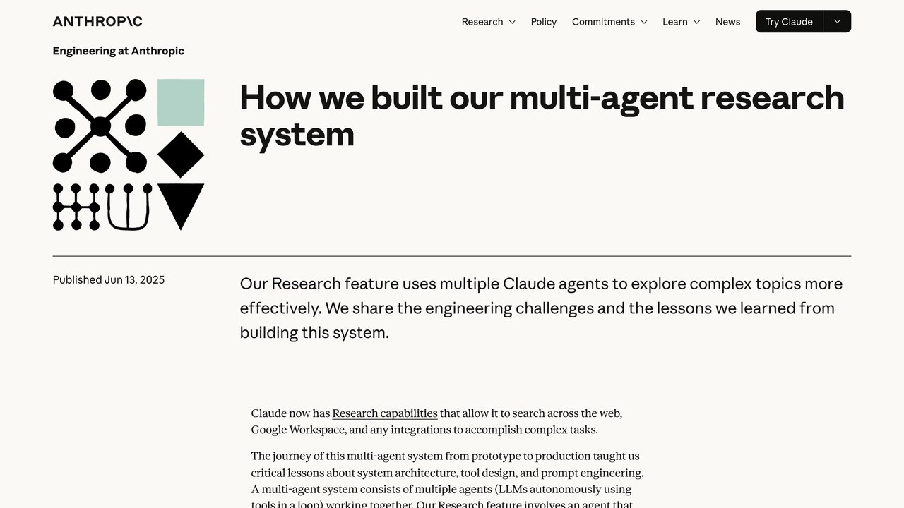

L a intuición es tan razonable que casi nadie la cuestiona: si una tarea es grande, repártela. Un agente que investiga, otro que redacta, otro que revisa. Es como montamos los equipos de personas y funciona bien, así que parece obvio que un sistema de agentes debería organizarse igual. La industria le ha puesto nombre —orquestación multiagente— y hay un ecosistema entero de herramientas para montarla.
El problema es que la analogía con un equipo humano se rompe justo en el sitio que importa. Dos personas que trabajan en lo mismo se cruzan en el pasillo, se preguntan cosas y corrigen sobre la marcha. Dos agentes, no. Cada uno arranca con lo que le diste al principio y no se entera de nada de lo que decide el otro mientras trabaja. Esa diferencia, que parece un detalle de implementación, es la causa de la mayoría de los desastres.
Lo interesante es que aquí no hace falta especular: tres de los equipos que más lejos han llegado montando esto han publicado lo que midieron, y dos de ellos llegan a conclusiones opuestas. Esta guía va de qué dicen exactamente esos datos, por qué no se contradicen tanto como parece, y cuál es la regla práctica que sale de juntarlos. Si todavía no tienes claro qué separa un agente de un chatbot, empieza por qué es un agente de IA; el resto de esta guía lo da por sabido.
Qué significa «varios agentes», exactamente
Conviene separar tres cosas que se llaman igual en las conversaciones y no lo son, porque el consejo cambia por completo según cuál tengas delante.
Un agente con muchas herramientas. Un solo bucle que puede buscar, leer archivos y llamar a APIs. Mucha gente lo llama «multiagente» porque hace muchas cosas, pero no lo es: hay un único hilo de decisión. Esto es lo que usas cuando trabajas con herramientas conectadas por MCP.
Un flujo con pasos fijos. Primero extraer, luego clasificar, luego escribir. Cada paso es una llamada distinta al modelo, pero el orden lo decidiste tú de antemano. Es una tubería, no una orquesta: no hay ningún agente decidiendo quién hace qué.
Orquestación de verdad. Un agente principal que, en tiempo de ejecución, decide cuántos subagentes lanzar, qué le encarga a cada uno y cómo juntar lo que devuelvan. Aquí sí hay reparto dinámico, y aquí es donde aparecen los problemas de los que va esta guía.
La mayoría de la gente que cree necesitar lo tercero necesita en realidad lo primero o lo segundo. Merece la pena pararse en ese punto antes de seguir, porque las dos primeras opciones son muchísimo más baratas de montar y de mantener, y no arrastran ninguno de los fallos que vienen a continuación.
El caso a favor: lo que midió Anthropic
El argumento más sólido a favor de dividir viene de Anthropic, que publicó cómo construyó el sistema de investigación que hay detrás de la función de Research de Claude. Es un diseño de orquestador y trabajadores: un agente principal planifica, lanza entre tres y cinco subagentes que trabajan en paralelo sobre partes distintas del problema, y luego sintetiza lo que devuelven.
El número que se cita en todas partes es real y viene de su propia evaluación interna de investigación: el sistema multiagente —con Claude Opus 4 de agente principal y Claude Sonnet 4 de subagentes— superó al Opus 4 en solitario en un 90,2%. Es una mejora enorme, y explica buena parte del entusiasmo del sector.
Pero el mismo documento trae el dato que casi nunca se cita al lado, y que cambia la lectura. Anthropic midió también el consumo: un agente gasta unas 4 veces más tokens que una conversación normal, y un sistema multiagente unas 15 veces más. Y fueron un paso más allá: en la evaluación BrowseComp, el consumo de tokens por sí solo explicaba el 80% de la varianza de rendimiento, y tres factores juntos —tokens, número de llamadas a herramientas y elección de modelo— explicaban el 95%.
Si el 80% de la mejora se explica por gastar más tokens, entonces buena parte de ese 90,2% no lo compra la arquitectura: lo compra el presupuesto. Varios agentes en paralelo son, entre otras cosas, una forma de gastar mucho más en un problema. A veces eso es exactamente lo que quieres. Pero deja de ser magia arquitectónica y pasa a ser una decisión de coste.
Hay una segunda ventaja, esta sí estructural y no comprable con dinero: cada subagente tiene su propia ventana de contexto. Si una investigación exige leer cuarenta documentos, un solo agente los va metiendo todos en la misma ventana y llega al final arrastrando un montón de ruido; cinco subagentes leen ocho cada uno y devuelven solo la conclusión. Esto conecta directamente con lo que explicamos en la guía de ventana de contexto: el problema no es solo que quepa, es que la precisión se degrada mucho antes de llegar al límite. Repartir lecturas entre ventanas limpias es una forma legítima de esquivar esa degradación.
Y ahora el matiz que el propio documento de Anthropic se encarga de dejar por escrito, y que conviene leer despacio antes de copiar su arquitectura: dicen que los dominios donde todos los agentes necesitan compartir el mismo contexto, o con muchas dependencias entre ellos, no encajan hoy en un sistema multiagente, y ponen la programación como ejemplo: la mayoría de las tareas de código tienen menos partes realmente paralelizables que la investigación. Añaden que los agentes todavía no se coordinan ni se delegan trabajo bien entre sí en tiempo real. O sea: el equipo que publica el 90,2% está diciendo, en la misma página, que su arquitectura sirve para un tipo de tarea muy concreto.
El caso en contra: por qué se rompen
El argumento contrario lo firmó Cognition, la empresa detrás de Devin, en un artículo con un título que no deja lugar a dudas: Don't Build Multi-Agents. Su tesis es que el problema no es de madurez de los modelos sino de diseño, y la resumen en dos principios.
1. Comparte el contexto, y comparte la traza completa, no mensajes sueltos. No basta con darle a cada subagente la misma instrucción inicial. Necesita ver también las llamadas a herramientas y los razonamientos intermedios del resto. Un resumen no vale: al resumir se pierde justo lo que hacía falta.
2. Las acciones llevan decisiones implícitas dentro, y las decisiones en conflicto dan malos resultados. Un agente que elige un color de botón o una forma de nombrar las cosas está decidiendo, aunque nadie le haya pedido que decida. Si otro agente decide distinto a la vez, nadie arbitra.
El ejemplo con el que lo ilustran se ha hecho famoso porque cualquiera lo entiende a la primera. Un agente recibe el encargo de clonar el Flappy Bird y lo parte en dos: un subagente hace el fondo con las tuberías, otro hace el pájaro. El primero entrega un fondo estilo Super Mario Bros.; el segundo, un pájaro realista. Ninguno de los dos ha hecho nada mal según sus instrucciones. Simplemente cada uno tomó una decisión de estilo que nadie le pidió y que el otro no llegó a ver nunca. Al juntarlo, no pega ni con cola.
Fíjate en lo incómodo del fallo: no hay ningún error que puedas encontrar leyendo el registro de ninguno de los dos subagentes. El fallo solo existe en la unión. Por eso este tipo de sistemas son tan difíciles de depurar y por eso, cuando fallan, tienden a fallar en silencio en vez de dar un error. Es un pariente cercano de los problemas que recogemos en errores comunes al automatizar con IA: lo que se rompe casi nunca es la pieza, es la costura.
Merece la pena decir que el autor, Walden Yan, ha matizado su postura después: en «Multi-Agents: What's Actually Working» (22 de abril de 2026) reconoce que sí han encontrado configuraciones que funcionan, por ejemplo un agente revisor que parte de un contexto limpio y solo ve el cambio a revisar, o un modelo que consulta a otro más potente cuando se atasca, siempre con una sola vía de escritura. Pero no son las que promete el marketing del sector, y comparten todas la misma propiedad, que vale la pena retener porque es la conclusión práctica de toda esta guía: un bucle principal que lleva el estado, subagentes sin estado propio y con un encargo estrecho, y la escritura en un único hilo. En cuanto intentas que dos agentes sean iguales y compartan memoria, la coherencia se cae.
Lo que dicen los números de fallos
Entre la anécdota de un equipo y la promesa de otro, hay un trabajo académico que intentó medir esto en frío. Un grupo de la Universidad de California en Berkeley —Mert Cemri y otros, con Matei Zaharia, Joseph Gonzalez e Ion Stoica entre los firmantes— publicó Why Do Multi-Agent LLM Systems Fail?, que analiza ejecuciones reales de siete marcos de trabajo multiagente populares (con modelos de 2025 como GPT-4o y Claude 3.7 Sonnet, así que las cifras absolutas de hoy serán otras; lo valioso es la clasificación de fallos). Sea cual sea el reparto que elijas, la forma de comprobarlo es la misma y conviene montarla antes: medir cada agente por separado, porque un porcentaje global no te dice cuál de ellos rompió la cadena — cómo evaluar un agente, paso a paso.
De ahí sale MAST, una taxonomía de 14 modos de fallo agrupados en tres familias: problemas de diseño del sistema, desalineación entre agentes, y fallos de verificación de la tarea. La construyeron anotando trazas a mano con acuerdo alto entre anotadores (kappa de 0,88) y la ampliaron después a un conjunto de más de 1.600 trazas anotadas.
El dato que conviene tener en la cabeza antes de montar nada: en esos siete marcos, las tasas de fallo van del 41% al 86,7%. Y la conclusión de los autores es la misma que la de Cognition, dicha con otras palabras: los fallos vienen del diseño del sistema y de cómo interactúan los agentes, no de las limitaciones del modelo — así que no se arreglan cambiando a un modelo mejor ni retocando el prompt. Piden rediseños estructurales.
A ese trabajo le faltaba la comparación más directa de todas —equipo contra agente solo, misma tarea, mismo modelo— y en octubre de 2026 Vals AI la publicó («Do Agent Teams Pay Off?») sobre Vibe Code Bench, que mide construir aplicaciones web completas a partir de una especificación: 50 aplicaciones, con GPT 6 Sol y Claude Opus 5.5, cada uno solo y en equipo, a esfuerzo de razonamiento medio y máximo. El equipo costó entre 1,8 y 5,1 veces más, y de las cuatro comparaciones solo una resultó estadísticamente significativa: Sol a esfuerzo medio mejoró 7,3 puntos (p = 0,005). Las otras tres se movieron entre −0,3 y +3,4 puntos con valores p de 0,16 a 0,81, que es otra forma de decir ruido. El hallazgo más útil para decidir no es el coste: es que para Sol subir el esfuerzo de razonamiento rindió más que añadir compañeros, y para Opus 5.5 ninguna de las dos cosas cambió nada medible. Antes de repartir el trabajo entre agentes, merece la pena probar el mismo agente pensando más. El equipo de Opus 5.5 a esfuerzo máximo sacó la mejor nota del estudio (93,2 %), pero costó unas 30 veces más que el agente solo a esfuerzo medio y su ventaja sobre este no fue significativa. Los propios autores concluyen que ninguna de las dos opciones es una elección por defecto clara y avisan de los límites de su trabajo: un solo benchmark de aplicaciones web, una única ejecución por configuración y arneses distintos para cada modelo.
Hay una cuarta cosa que casi nunca entra en estas discusiones y que conviene no olvidar: cada subagente que añades es otra superficie por la que te pueden colar instrucciones. Si uno de ellos lee una página web o un correo, lo que venga ahí dentro puede acabar dirigiendo al orquestador. Lo explicamos entero en la guía de inyección de prompts, pero el resumen aplicado aquí es corto: multiplicar agentes multiplica puertas de entrada, y el que las cruza suele ser el que más permisos tiene.
La regla práctica: cuándo sí y cuándo no
Juntando las tres fuentes, la contradicción se deshace sola. Anthropic tiene razón sobre un tipo de tarea muy concreto y Cognition tiene razón sobre casi todas las demás. Lo que separa un caso del otro se puede reducir a tres preguntas.
¿Las partes son independientes de verdad? Independientes significa que el subagente 2 puede terminar su trabajo sin saber nada de lo que decidió el subagente 1. Si la respuesta es «bueno, más o menos», es que no. Investigar diez empresas por separado: sí. Escribir diez secciones de un mismo informe que tienen que sonar igual: no.
¿El trabajo es de lectura o de escritura? Buscar, leer y resumir se paraleliza bien porque nadie pisa a nadie. Escribir código, editar un documento o modificar una base de datos, no: ahí cada acción condiciona la siguiente y necesitas un único responsable.
¿El resultado vale quince veces el coste? Es la pregunta literal que se desprende del dato de Anthropic. Para una diligencia debida, una revisión de literatura o un análisis de competencia que ocuparía días a una persona, la cuenta sale. Para resumir tus correos del día, no se acerca.
Si las tres respuestas son que sí, divide. Si alguna es que no, un solo agente con buenas herramientas te va a dar un resultado más coherente, más barato y muchísimo más fácil de arreglar cuando se tuerza. Y conviene decirlo sin rodeos porque va contra la corriente del sector: el valor por defecto correcto es un solo agente. Dividir es la excepción que hay que justificar, no el punto de partida.
Un atajo que funciona bastante bien en la práctica: si te cuesta explicarle a un compañero, en dos frases y sin dibujar nada, qué hace cada agente y qué no puede saber ninguno de los otros, el sistema todavía no está lo bastante claro como para construirlo.
Cómo montarlo sin que se rompa
Si has pasado el filtro anterior y de verdad te toca dividir, hay cuatro decisiones que separan un sistema que aguanta de uno que da resultados raros una vez de cada tres. A ellas conviene sumarles una quinta de higiene: un presupuesto y un máximo de pasos por agente, porque al repartir el trabajo también se multiplica el contexto que cada uno arrastra (los frenos de gasto, uno a uno).
Un solo escritor. Los subagentes leen, investigan y proponen; el agente principal es el único que escribe el resultado final. Es la propiedad que comparten, según Cognition, todas las configuraciones que sí les funcionan.
Subagentes sin memoria propia. Cada uno recibe su encargo, lo hace y devuelve el resultado. No guardan estado entre llamadas ni hablan entre ellos. El estado vive en el bucle principal, en un solo sitio.
Encargos absurdamente explícitos. «Investiga la empresa X» es una invitación a que se invente el criterio. Dile qué buscar, en qué formato devolverlo y qué no es asunto suyo. La mitad de los fallos de desalineación de MAST nacen de encargos vagos.
Alguien verifica al final. La tercera familia de fallos de MAST es exactamente esta: nadie comprueba el resultado. Un paso de verificación separado, con el encargo explícito de buscar contradicciones entre lo que devolvieron los subagentes, pilla justo los fallos de costura.
Una nota sobre el coste que conviene tener clara antes de la primera factura (y el detalle de cómo se factura cada token, en esta guía de costes): con el reparto en paralelo, el gasto no crece con el tiempo que tarda, crece con el número de subagentes por lo que lee cada uno. Cinco subagentes que leen veinte páginas cada uno son cien páginas de entrada aunque todo termine en dos minutos. Si quieres hacer el cálculo con tus propios números antes de montarlo, tienes la calculadora de coste de API.
Y el consejo más útil de todos es el más aburrido: empieza por un agente. Móntalo, úsalo de verdad una temporada y apunta dónde se atasca. Si lo que te frena resulta ser la ventana de contexto llena de cosas que ya no hacen falta, o el reloj porque hay que leer muchas fuentes independientes, entonces dividir te va a servir. Si lo que te frena es que se equivoca o que no entiende bien lo que quieres, añadir agentes solo te dará el mismo error repartido entre cinco sitios y más caro. Para ese camino de entrada, automatizar tareas repetitivas con agentes es el punto de partida razonable.
Cómo se traduce esto en Claude Code (y qué es nuevo en 2026)
Las herramientas actuales ya traen estos patrones preparados. Aplicarlos con criterio es lo que cambia el resultado. Según la documentación de Claude Code, hay cuatro niveles, de menos a más complejidad:
| Nivel | Qué es | Cuándo tiene sentido |
|---|---|---|
| Un agente con herramientas | La sesión normal, con un solo hilo de decisión. | El punto de partida para casi todo. |
| Subagentes | Ayudantes con su propia ventana de contexto; solo te devuelven un resumen. Cada uno gasta su propio uso. | Tareas de lectura que llenarían tu conversación: buscar, revisar, ejecutar tests. |
| Equipos de agentes | Varias sesiones de Claude Code que se comunican entre sí. Son experimentales y vienen desactivados; usan bastantes más tokens que una sesión. | Investigación y revisión en paralelo. La documentación recomienda empezar con 3-5 compañeros y evitar que dos editen el mismo archivo. |
| Flujos dinámicos | Claude escribe un script que lanza y coordina muchos subagentes en segundo plano. Hasta 16 agentes a la vez por defecto y 1.000 en total por ejecución. | Auditorías de muchos archivos, migraciones grandes o investigaciones con fuentes que contrastar. Prueba primero con un trozo pequeño. |
Fíjate en que encaja con las reglas de arriba: la documentación aconseja equipos para investigación y revisión, que son tareas de lectura, y advierte de que para tareas secuenciales o con ediciones en el mismo archivo es mejor una sola sesión o subagentes. También avisa del coste: un flujo grande muestra un aviso cuando programa más de 25 agentes o proyecta más de 1,5 millones de tokens. Detalles de uso en la guía de Claude Code.
En el lado de desarrolladores, Anthropic activó el 9 de octubre los flujos dinámicos en Claude Managed Agents (en beta): hasta 1.000 agentes por ejecución, 64 hilos a la vez y 24 horas por defecto de duración máxima, según su documentación. Lo contamos en la noticia sobre los flujos dinámicos. La cifra de Anthropic en esa prueba (66 de 70 fallos hallados frente a 14-27 con un agente) es, de nuevo, un caso de lectura paralela, no de escritura.
Fuente oficial: Equipos de agentes · Flujos dinámicos · Managed Agents: workflow runs